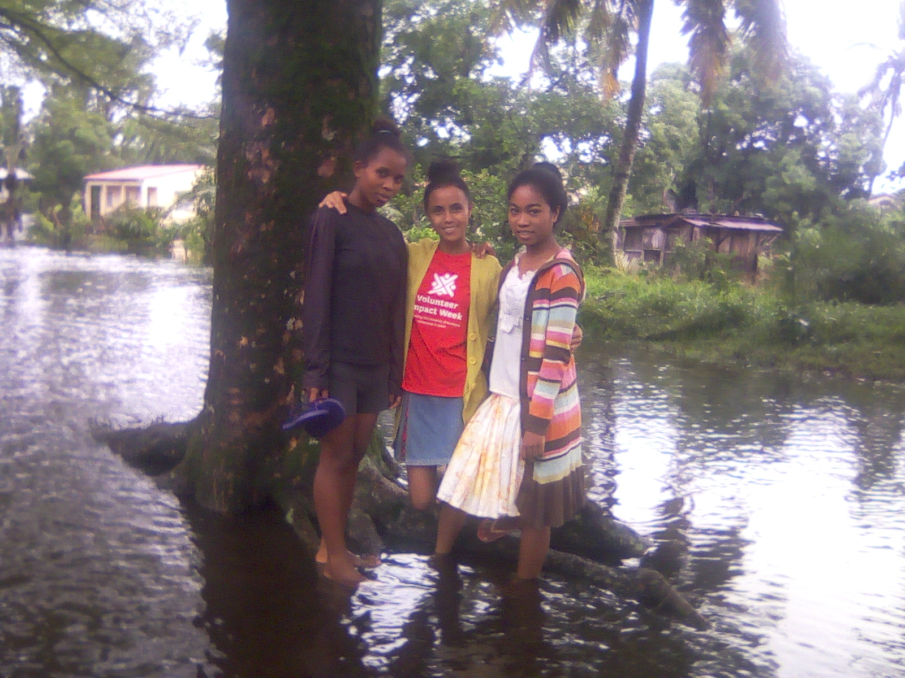
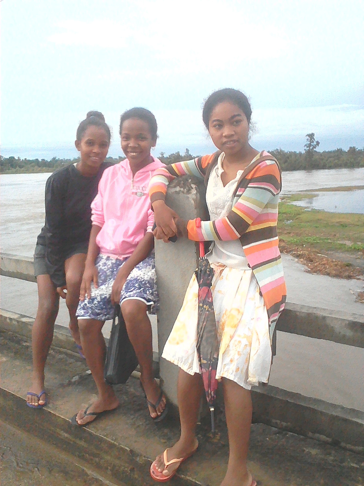

I would like to tell you what happenned in Mahanoro on .
This what happenned in Mahanoro

We were decided to go to church the Sunday morning.
In the early morning, we went out to check for the way if it is ok.
Unfortunately, the road was full of water. There was no chance to go.
It was too deep.
We delved into an idea to go for a walk to spend our day.
We decided to visitthe bridge which is Mahanoro.
It is such a cool place for hanging out with friends.
Visiting Mahanoro bridge

We went for a walk to spend our day even though it was a bit rainy .
When we came there we were impressed by what was happenning.
There were lots of people in there. People said that there were boats that have
lost in the sea. However, they had tried to take it back, but then some of them was already far.
They couldn't take it back anymore because the sea was too strong.
The boats that was lost were from the Pangalanes riviere. The flood broke up many things such as houses. Lots of houses were broken down because of the flood.
That was happenning here in Mahanoro during the week of .
It is such an unforgetable story because it is my 1st time that I faced thing like this in my whole life.